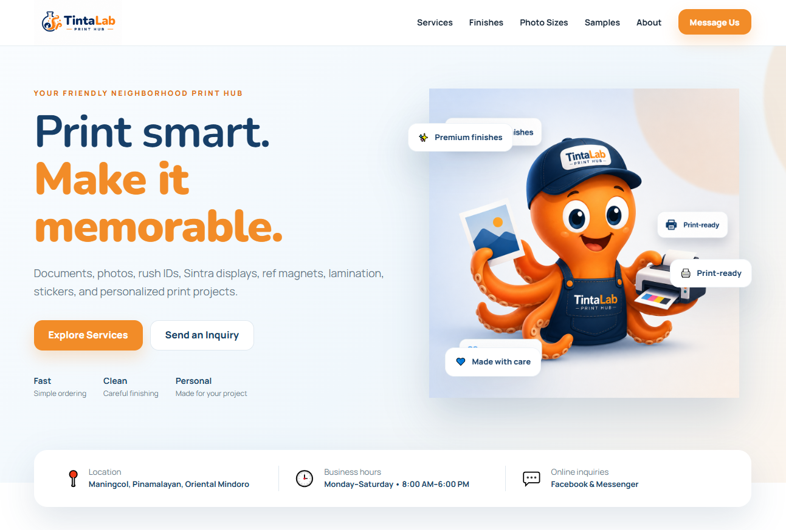
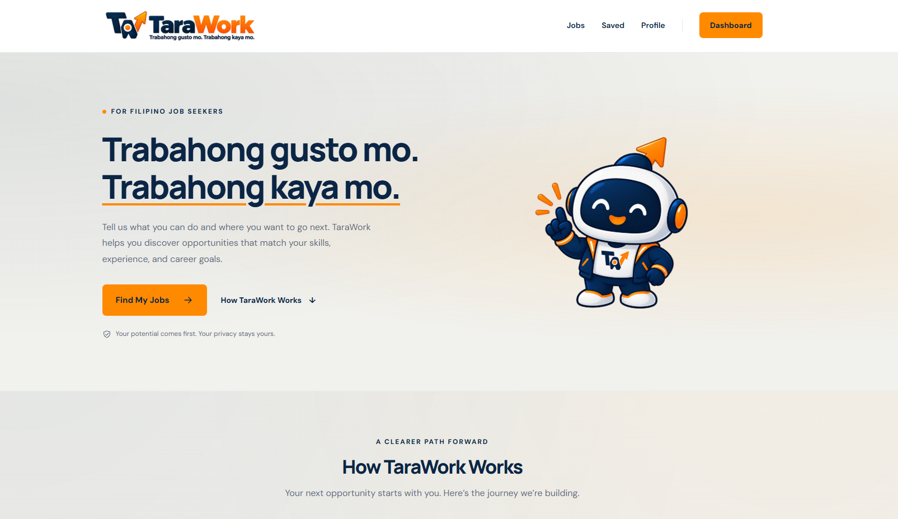

Administrative Support
Email coordination, file organization, task tracking, scheduling support, and day-to-day admin work.
Virtual Assistant · Administrative Support
Detail-oriented and tech-savvy professional with experience in content moderation, Subject Matter Expert support, spreadsheet management, data entry, email coordination, process updates, and confidential information handling.

About Me
I have three years of content moderation experience, including Subject Matter Expert responsibilities, backed by a Bachelor of Science in Computer Science.
My background has trained me to work carefully with high-volume tasks, follow processes, handle sensitive information, coordinate updates, maintain spreadsheets, and stay focused on quality and accuracy.
I am currently open to Virtual Assistant, Administrative Support, Data Entry, Content Moderation, and related remote roles where I can support a team with consistency, organization, and attention to detail.
Skills & Tools
A blend of administrative support, digital tools, data handling, and process-focused experience.
Email coordination, file organization, task tracking, scheduling support, and day-to-day admin work.
Data entry, spreadsheet management, Excel files, Google Sheets, organized records, and accuracy checks.
Online research, information handling, process updates, documentation, and clear team communication.
Policy compliance, high-volume review, quality standards, confidentiality, escalation, and guideline alignment.
Experience
Concentrix BGC
McDonald's
Handled customer service, transactions, and multiple responsibilities during busy shifts while working closely with the team.
Special Program Employment for Students (SPES)
Performed encoding and basic data-entry tasks while maintaining organized and accurate records.
Palm Decorations
Completed assigned production tasks while following workplace procedures and meeting daily requirements.
Featured Projects
Collaborative project support involving review, organization, feedback, content preparation, testing, and hands-on help during development.

View Live Project ↗Supported the development and setup of TintaLab Print Hub through design input, content organization, product preparation, testing, and feedback on the customer-facing experience.
Visit website ↗
View Live Project ↗Assisted with project development by providing feedback, reviewing the user experience, testing features, helping organize content, and supporting the project as it continues to grow.
Visit website ↗These are collaborative projects. Jane’s role is presented as support and contribution, not sole ownership or development.
Education
Taguig City University · 2018–2023
Let's Work Together
I’m open to Virtual Assistant, Administrative Support, Data Entry, Content Moderation, and related remote opportunities.